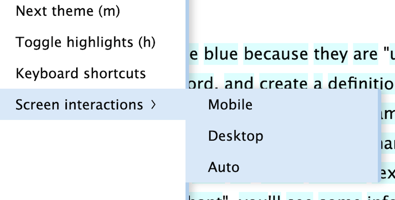

Introduction
This contains some FAQS (frequently asked questions) about LUTE (Learning Using Texts).
For the Lute user manual, please see https://luteorg.github.io/lute-manual/.
If this FAQ is unclear, has an error, or needs a new FAQ entry, please open a new GitHub issue in the lute-faq repository.
Where can I get help?
If you need help with Python, pip, or Docker, the first and best place to look is Google!
But if it's a Lute issue or question, the best places to ask for help are:
- the Lute Discord "issues and bugs" channel.
- Lute v3 GitHub Issues
When coming in with a question, please be as specific with your details as possible.
Good luck!
Can I run Lute on a private web server?
Lute can be run anywhere that has the necessary requirements (Python, etc). For a server installation, Docker would probably be the easiest.
It's outside of the scope of this manual to show how to set up your server in AWS, Digital Ocean, or wherever, but it's totally possible.
The biggest thing you probably have to worry about is your backup and disaster recovery plan. Lute writes disk for the database and images, so make sure you're backing up and exporting to some secure, reliable location.
Can I run Lute on my phone or pad?
Lute doesn't have a dedicated mobile offline client. It needs a server to run the backend python code.
You can still use Lute on your iPhone/iPad/whatever, though.
One option is to set up a web server somewhere in the cloud, and access that. (That might be tricky, I won't be able to help with that.)
If your computer is running Lute, and it's on a Wifi network, you should be able to access it if your phone is on that same network:
- start Lute. It will say something like
Lute is running. Open a web browser, and go to: http://localhost:5001. The last 4 digits are the port number. - make a note of your computer's IP address (somewhere in your computer settings ... it might be something like
192.168.1.10, or10.0.0.126. - in your phone/tablet/whatever, connect to the same Wifi network, start up the browser, and go to
http://<the-ip-address>:<port-number>. E.g., on my phone, it washttp://10.0.0.126:9876, because I run my Lute on port 9876.
Note that your computer has to be running (not asleep), and Lute has to be running! :-P
Can I store Lute data on a USB key?
If you regularly switch between computers, one option for setup (which sounds dicey to me :-) ) is to store your data in a USB key.
Pip
For pip users, you could custom config.yml file, and put it in the root folder where you run Lute, with something like the following:
# File config.yml
ENV: prod
DBNAME: lute.db
DATAPATH: /full/path/to/your/usb/lute/folder
BACKUP_PATH: /full/path/to/backup/folder
When Lute runs, it uses this config file, and will write all of its data in the folder specified in the DATAPATH.
Docker
Docker users should change their docker-compose.yml to map the USB key folder to the mounted /lute/data directory.
Can I deploy Lute on NixOS?
Deploy Lute on NixOS in three simple steps using compose2nix.
1. Create docker-compose.yml
name: 'lute'
services:
lute:
image: jzohrab/lute3:latest
ports:
- 5006:5001
volumes:
- /var/lib/lute/data:/lute_data
- /var/lib/lute/backup:/lute_backup
2. Convert to NixOS Module
$ nix run github:aksiksi/compose2nix
3. Import the Module
Add to your NixOS configuration:
imports = [
./docker-compose.nix
];
That's it! NixOS will handle all the necessary setup, including creating and setting permissions for the directories, when you rebuild your configuration.
Can I make Lute secure?
Lute doesn't come with authentication, so if you want to add security, the easiest way to do that is with a server that acts as a gatekeeper to the app (a reverse proxy). The easiest way to do this is with Docker compose.
Below is a working example using an nginx reverse proxy that may be useful as a starting point. One caveat which I haven't bothered investigating further: the session doesn't expire (quickly?), so once you log in, anyone using your same browser will have access.
docker-compose.yml
version: '3.9'
services:
lute:
image: jzohrab/lute3:latest
volumes:
- ./data:/lute_data
- ./backups:/lute_backup
nginx-proxy:
image: nginx
ports:
- "5001:80"
volumes:
- ./nginx.conf:/etc/nginx/nginx.conf
- .htpasswd:/etc/nginx/.htpasswd
depends_on:
- lute
Notes:
- This uses the same
lute3image, but doesn't expose the port - The
nginx.confand.htpasswdfiles will exist in the same folder as this compose file; they're created below - This maps host port 5001 to the nginx port 80, so the message
http://localhost:5001when you rundocker compose upis still valid :-P
nginx.conf
Content:
user nginx;
worker_processes 1;
events {
worker_connections 1024;
}
http {
sendfile on;
tcp_nopush on;
tcp_nodelay on;
keepalive_timeout 65;
types_hash_max_size 2048;
# Allow large audio files. Increase this if your files are large.
client_max_body_size 100M;
include /etc/nginx/mime.types;
default_type application/octet-stream;
server {
listen 80;
server_name localhost;
location / {
# This nginx server is running in a docker compose environment,
# so the name "lute" is resolved using compose's dns resolution.
proxy_pass http://lute:5001;
proxy_set_header Host $host;
proxy_set_header X-Real-IP $remote_addr;
proxy_set_header X-Forwarded-For $proxy_add_x_forwarded_for;
proxy_set_header X-Forwarded-Proto $scheme;
}
# Basic Authentication
auth_basic "Restricted Access";
auth_basic_user_file /etc/nginx/.htpasswd;
}
}
.htpasswd
Use the htpasswd command to generate a new .htpasswd file. With username = "username" and password = "password":
htpasswd -c ./.htpasswd username
generates the following .htpasswd file
username:$apr1$MNsKt1Ie$vuho4oeZV78PSLApjZ3vm.
Start it up
With the three files in place in the same directory (and the data and backup folders created), you can start it up:
docker compose up
nginx will ask for username/password authentication, and then everything works as before.
Is there an online version of Lute?
It's called LingQ. :-)
LingQ is great. Pay a nominal fee and you get tons of content and a big community of users. LingQ is also a business, so they have staff, and (hopefully) proper tech support.
Lute will never be online in the way that LingQ is. While it's possible to build an online company with various cloud providers (AWS, Google, Digital Ocean, etc), running a proper company with unbreakable confidence requires a great deal of ongoing work:
- scalability
- monitoring and alerting
- security
- backup and restore
- disaster recovery
- ... etc.
Rather than try to go online and compete with existing solutions, Lute opts to emulate the Anki desktop approach: individual user app installs.
Migrating from v2 to v3
Database and images
If you're already using Lute v2 (written in PHP), and want to migrate to v3, it's pretty straightforward: you just have to move some files around.
Step 1. install Lute v3, and start it up. Then:
For non-Docker users
- In the top right corner of the home screen, click About > Version and software info
- The "Data path" folder is where you should put your database and images, replacing the files that Lute v3 automatically put there.
- Stop Lute v3
- Replace the files that Lute created in the "Data path" folder with your files.
- Start Lute up again.
For Docker users
It's even easier: when you started Lute v3, you had to mount some directories to the container.
- Shut down Lute v3!
- Put your database and image folder in the folder that you mounted to the
/lute_datadirectory, replacing the files that Lute created there. - Start Lute up again.
Backup settings
Lute v2 has backup settings stored in the .env file. v3 uses a Settings screen. The mapping of values from the .env file is obvious.
Custom styles
Lute v2 uses a "custom_styles.css" file in the data folder. v3 uses a Setting text box, so copy any content from your custom_styles.css file into Lute v3 Settings.
Can you add language X?
Yes, but you'll need to get it working in your own Lute first.
Once you've figured out good language settings, please open an "Add language" GitHub issue. Thank you!
Where can I find books to import?
On the internet!
But, since you asked, some of my favorites:
- Google :-) -- search for "
download ebooks" or " online stories" or similar. - Project Gutenberg
- Wikipedia
Why won't my epub import correctly?
Lute uses an open source epub parser named openepub kindly created by a Lute user to avoid licensing issues with currently available epub parsers.
The parser project is on GitHub at https://github.com/sakolkar/openepub.1
Parsing is always a challenge, and some epubs may contain strange formatting that the library can't handle. If your epub doesn't parse correctly, please open a GitHub issue in the openepub repo.
In the meantime, use any of the tools available to convert your epub to a text file for import, such as Calibre.
as at Dec 28, 2023!
Why won't my pdf import correctly?
Lute uses the PyPDF2 library for PDF imports.
PDF imports sometimes add extra unwanted spaces: for example, the word "happiness" in your PDF may be imported as "happi ness". For this reason, when you import your PDF, Lute will give you a warning that it may be inaccurate.
This issue is not a problem with Lute, or even with the PyPDF2 library ... correctly parsing PDFs is actually extremely tough. Per the authors of PyPDF2:
Getting whitespaces right is notoriously hard. @pubpub-zz is the expert in that topic; I'll leave it to him to decide if we should leave this issue open. The issue is that PDF does not (necessarily) represent the words as words internally. In the worst case, it just gives the absolute position of each character in the document.
References:
In summary, the best that we can do is say that PDF imports are not perfect, and you should be aware of that while reading. You can edit each page as you come across problems, or just ignore the incorrect words.
My text file import is giving a "utf-8 encoding" error message
Lute can only import utf-8 encoded text files.1
Your file may already be in utf-8 encoding, but if not, you'll need to first convert it.
I don't know of all of the options available, but here are some suggestions:
- https://subtitletools.com/convert-text-files-to-utf8-online
- if using Microsoft Word, you can export your file, but you have to choose "other encoding" and then unicode (utf-8). See e.g. https://support.3playmedia.com/hc/en-us/articles/227730088-Exporting-a-UTF-8-txt-file-from-Word
https://en.wikipedia.org/wiki/UTF-8: "UTF-8 is a variable-length character encoding standard used for electronic communication." It defines how characters are actually written to disk, essentially.
I can't click on words in the reading screen
Though Lute was developed primarily for desktop use, some users connect to Lute on their mobile devices (see Mobile support and Reading on mobile). Lute tries to set up a desktop or mobile environment automatically, but sometimes it's hard to determine if you're on mobile or not[^1]. Sometimes it's not even possible: for example, you may have a regular laptop with an additional external touchscreen ...
If your reading screen isn't responding to clicks or touches, you may need to tell Lute what kinds of screen interactions you need. In the slideout menu of the reading menu, you can do that:
[^1] See StackOverflow for the definition of futility.
Why can't I change a Term?
Lute won't let you change a Term's actual text once it has been created and saved, you can only change the case of existing characters. For example, you could change "CAT" to "Cat" or "cat", but not to "dog".
Allowing Terms themselves to be changed once created creates potential problems, so (for now) Lute just disables that.
As I get more experience with this feature of Lute, I may do away with this restriction.
Reasons for this restriction:
-
a typo or other mistake would cause previously entered information to get accidentally overwritten. For example, if you'd created a Spanish Term and translation "chico / boy", and then accidentally edited another existing term "CHICA / girl" to "chico / girl" (accidentally hitting "o" instead of "a") and saved it, the existing "chico / boy" term would be updated instead.
-
During reading, if you click on an unknown word, and decide to change the term's capitalization, Lute won't let you mis-type the word. For example, if you're reading a shocking Spanish newspaper article about "GATOS SALVAJES" (wild cats!), you might want to save the term "GATOS", but as lowercase "gatos". Lute stops you from typing "gattos" during the fix, so the new term is created correctly.
Where are my new Term's sentences?
Lute shows sentences for a Term and its siblings when you click the Sentences link on the Term form, but it only includes sentences for pages marked as "read". Pages are marked as "read" when you click either of the links at the bottom of the reading page:

(The green checkmark also changes all unknown terms to well-known.)
Lute only includes sentences from pages marked "read" for a few reasons:
- Only sentences you've seen before are included, so you'll have had some exposure to the vocabulary already. Including unread sentences would possibly show you new, confusing, or distracting vocabulary or ideas.
- Showing unread sentences can spoil books! (I was reading a book and when I looked up a sentence I found out that a character died ...)
In summary, when you first create a new term, the Sentences link won't show any sentences right away, but once you mark the page as "read" the sentences will be shown in the future.
How should I use statuses?
Lute has statuses 1 through 5, plus Well-Known, and Ignored. For some people, including me sometimes, that's a lot of statuses! Your usage of these values is totally up to you, so pick your own rating scheme and stick with it.
For me personally, as a longtime user of Lute, I'll say that beyond a certain point, statuses don't really matter much, except perhaps to filter later in the Term listing screen. I use the following levels:
- 1 for brand new or tricky things
- 3 for stuff I've seen before
- 5 for stuff I know well
- Well-Known for things that occur so frequently that I don't need to look them up
- Ignore for things like names, locations, or really specialized terms that I'm certain I'll never see again, like chemical compounds
Others have more nuanced levels:
- 1: Defined and seen at least once before, but unlikely to understand and no attempt has been made at truly understanding/memorizing
- 2: At some point I have somewhat memorized this or understood it within context. 50% chance I will remember it if I sit and think about it for a bit, but its somewhat straining.
- 3: I can recognize this word fairly quickly and understand it. Every now and again I will have to stop and think about it for a a moment.
- 4: I recognize it and I'm comfortable with it. I've seen it semi-frequently and I'd probably remember it even if I didn't see it for a while.
- 5: Instant recall, and there's almost no chance that I'll forget this word any time soon. It should probably be WKn but I like the way green looks and makes me feel.
Still others just use status 1-3.
So, pick whatever you feel is best, don't sweat it too much, and just start reading. You can always revise term statuses as you go.
What are Term parents?
"Term parents" are a way to:
- simplify your Term data management in Lute.
- help you build your own "mental map" of whatever language you're studying.
When reading English in Lute, you might see words like break, broke, and broken. These are all different forms of the word break. You can enter in "break" as the parent, track basic data there, like an image and definition, and that's used for popups etc. while reading. You don't have to enter the same data for all the "child terms" -- that would be tedious.
Sometimes, parents are useful to indicate very strong relationships between words as well. Examples:
- "kitten" - "cat"
- "gatito" - "gato" (Spanish)
- "Krankenhaus" - "krank" and "Haus" (German)
In these cases one "parent term" might refer to conjugations (break to broken), as well as other obvious joins (break to unbreakable).
Why call it a "parent", and not a "lemma" or "root form"?
Good question. From the above example, "break" is referred to as the "lemma" - aka the "canonical form", or "dictionary form"[^1]. But to me, that doesn't quite fit how my mind organizes the language -- with multiple parents and word families.
So, how should I use this?
There are no hard-and-fast rules. I mainly use "parent terms" for conjugations, and then I add in extra information if needed.
For example, as a basic German learner, I might have:
- gehen - to go (parent term)
- ging, with tag "past"
- gegangen, with tag "participle"
As a more advanced Spanish learner, I add the dozens of Spanish verb forms (quiero, quise, qerría, quisiera ...) as child terms of the root, and I sometimes link words I feel belong together, just for fun (e.g., "ternura" is a child term of "tierno").
Wikipedia: Lemma_(morphology) - [^1]
How is development work prioritized?
Variations on this:
- where's the roadmap?
- what's the long-term plan?
- can you add feature X?
- why was feature Y added before feature Z?
These are all great questions, and at the moment there's really not a good answer in the normal "product" sense.
The goal is for Lute, or something a lot like it, to become a default viable tool for a large user base. At the moment, the steps for getting there are not planned or roadmapped like a regular product would be: good planning takes a lot of time and energy. Lute's free and open source, so I and others work on it as we can1.
Lute's got a big backlog of issues and ideas. You may be wondering why your small request has been sitting in the queue since like forever. There are some criteria I use to pick what to work on:
- Relative size of work: how fast/easy it is to design, code, test, and document. Sometimes small-seeming things aren't feasible. E.g., "Couldn't you just query the database and tell me how many unknown words are in my book?" No, unfortunately, because of the way that Lute stores data. (It seems like it would be easy, right? But it's not.) Some requests are intertwined with others, or fundamentally don't follow Lute's technical design. All good, but big changes take time.
- User impact: when I was coding just for me, this was easy. But now with many users, I try to take that into account.
- Fun and usefulness for me personally: This keeps me motivated, and ensures that Lute doesn't have any obvious jankiness.
- Code and architecture quality: Since Lute should be open source and hackable, it should be clear. Though I've tried to keep things sane, in some places it's tough. So this kind of work (refactoring: improving the quality of existing code) is important.
- Differentiators: there are a few things that could make a big difference to learning. With Lute, term images and parent terms were two of the initial things that drove me to write it in the first place. I think that there are others as well: "word families", "sentence notes", and of course AI integration ... all of these might just be personal projects and thoughts though, I'm not sure!
Lute's open source, so anyone is welcome to make forks and tweak it for their own learning and fun. But most of us want to just get on with it.
"Work on it as we can" sounds chaotic. To counteract this chaos, Lute has a decent set of automated tests and checks to ensure that the code is viable.
Can I contribute to Lute's code?
Yes please!
Lute is supposed to be open source and free software, so you can do what you'd like with it.
If you want to have your work be part of the "official" Lute releases, check out the Lute wiki.
Can I import data from other systems?
You can import data into Lute via bulk term import, you just have to get your data into .csv file format.
Importing data from LWT
LWT has an "export" feature:

Use "Export ALL Terms (TSV)" to export a tab-separated value file. The file may get downloaded as a ".txt" file, in which case, rename it to ".tsv".
A sample row of data exported from LWT looks like this:
gato cat Tengo un {gato} 1 Spanish 20
You can then import that file into something like Google Sheets, and prepare it for import.
As the bulk term import page says:
- The first line of the CSV file must have the field headings: language, term
- The first line of the CSV file may also have any of these headings: translation, parent, status, tags, pronunciation
Add a blank line, and then place Lute headings in the appropriate columns. Continuing with the above example, the data becomes:
| term | translation | n/a | n/a | status | language | n/a | tags |
|---|---|---|---|---|---|---|---|
| gato | cat | Tengo un {gato} | 1 | Spanish | 20 |
Removing the unmapped columns (with "n/a" in the heading) gives:
| term | translation | status | language | tags |
|---|---|---|---|---|
| gato | cat | 1 | Spanish |
Export this to a .csv file, and import it into Lute.
Why doesn't Lute have flashcards, or an SRS?
I do feel that SRS1 plays an important role in language learning (if you like using SRS!).
Lute currently doesn't have a "testing" mode or SRS for a few reasons:
- The core feature of Lute is reading, so I have been focused on making reading and parsing the most pleasant experience. To me, testing is sort of outside of this.
- Adding a satisfying testing experience is tricky, and could explode into a ton of work. Anything else feels half-baked. Here are some things I'd want to see in testing:
- Efficiently testing terms and parent terms (there's no need to test each instance of every word, in my opinion) -- how to manage this best?
- Testing for recall by image
- Selecting terms to test
- Testing by "category"
- ... etc
I would rather keep Lute focused on reading, and delegate testing to something that is dedicated to that -- like Anki. There is an issue for Anki export. Then there would need to be a feedback loop for statuses to get updated, etc.
Lute is open-sourced software, though, so if someone feels a burning need to implement an SRS in Lute, they are welcome to do it. For it to be included in the main Lute package, the code would need to pass the various quality checks, and would also need to have sufficient testing and documentation (user docs and technical docs). It could also be written as a standalone app that interfaces with the Lute database, or perhaps via an API.
Spaced Repetition Software
Why is this free?
Lute is and will always remain free for a few reasons.
-
Reciprocity. When I've studied languages, I've had the great benefit of finding top-notch free technology and content from many, many people and organizations.
-
Freedom from accountability! Yep, I said that. While I would appreciate any kind of voluntary donation you might wish to give me for making Lute, I can't ask for payment. Lute is open source software, and as such will always be a work-in-progress, no matter how great it is. Requiring payment for use would create an additional burden of responsibility towards each user, and potentially cause frustration for users who buy something that doesn't quite work for them.
-
Anki does it, why can't Lute? Anki is miraculously free. They have a great system, central server syncing, a massive community ... it's something to aspire to.
Who knows, maybe at some point Lute will become financially rewarding. That would be a happy accident, but that's not the main goal.